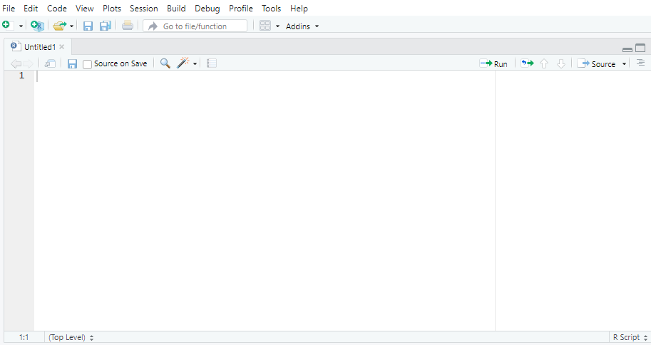
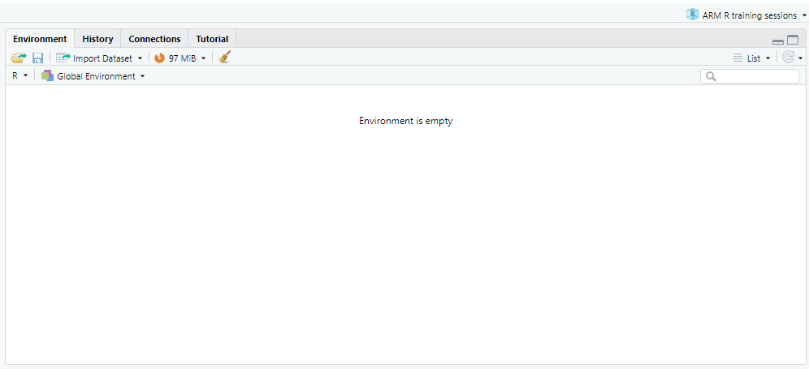
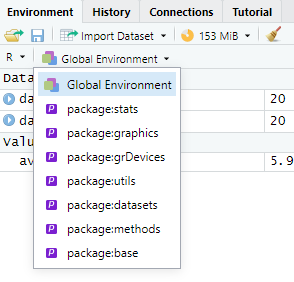
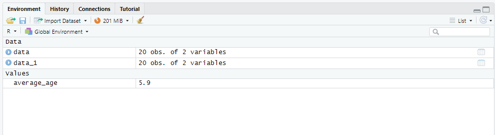
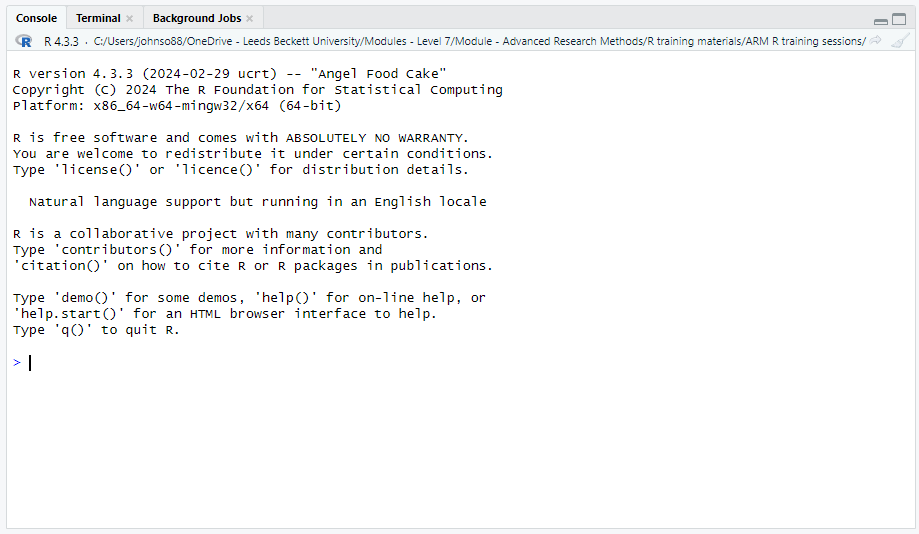
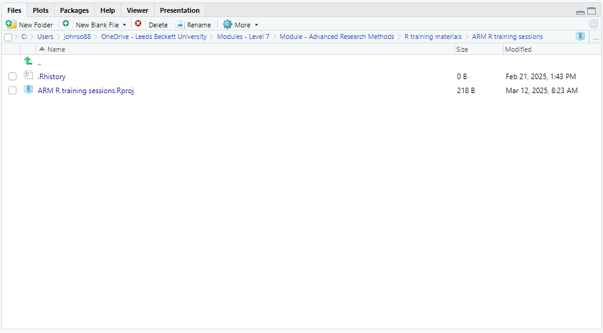
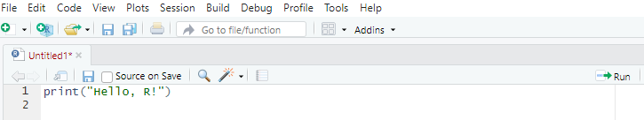

data <- read_csv("file.csv") # Imports the dataset "file" and gives it the name "data"
View(data) # Opens the dataset in a new tabGuide to R 01: R and RStudio basics
R for Biomedical Science · Leeds Beckett University
NoteHow to use this guide
This guide is your reference for week 1, session 1. You don’t need to read it all in one go: the workbook will point you to the sections you need. Every piece of output shown here was produced by running the code when this page was built, so what you see is exactly what R gives back.
What is R?
R is a powerful programming language specifically designed for statistical computing and data analysis. It is widely used in academia, research, and industry for handling data, performing statistical tests, and creating visualisations. Unlike general-purpose programming languages such as Python or Java, R was built with data in mind, making it particularly well-suited for statistical modelling, machine learning, and data manipulation.
However, working with R directly can feel intimidating at first, as it primarily runs through a command-line interface. This is where RStudio comes in.
RStudio is an integrated development environment (IDE) that makes working with R much more accessible and user-friendly. It provides a structured interface where users can write, run, and debug R code more efficiently. RStudio includes helpful features such as:
- A script editor – allowing users to write and save R code in files for reuse.
- A console – where commands are executed immediately.
- An environment pane – displaying stored variables and datasets.
- A plots and files pane – for viewing visualisations, managing files, and installing packages.
Together, R and RStudio form a powerful toolkit for data analysis. R handles the computation, while RStudio provides an organised workspace to interact with R more effectively. Throughout this guide, you will learn how to use both tools to perform data analysis, create visualisations, and explore datasets in an intuitive and structured manner.
Getting started with RStudio: your first look
When you open RStudio for the first time, you will see a workspace divided into multiple panes. While this layout may seem overwhelming at first, each section serves a specific purpose. Let’s go through what you should do to get started.
Familiarising yourself with the interface
RStudio is divided into four main panes:
- The Script Editor (top-left pane, may be empty at first) – This is where you write and save R scripts (files ending in .R).
- The Environment and History Pane (top-right) – Shows stored variables, datasets, and a history of past commands.
- The Console (bottom-left pane) – This is where you can type R commands and see immediate results.
- The Files, Plots, Packages, and Help Pane (bottom-right) – Used for managing files, viewing plots, installing packages, and accessing documentation.
Script editor
The Script Editor (also called the Source panel) in RStudio is where you write, edit, and save R scripts (.R files), R Markdown (.Rmd) documents and Quarto (.qmd) documents such as your workbook. It is designed for writing reusable code, rather than running commands directly in the Console.

Key features of the script editor
- Code writing & editing: type and edit R scripts.
- Code execution: run selected lines or entire scripts.
- Syntax highlighting: different colours for functions, variables, and comments.
- Auto-completion: suggests function names and arguments.
- Code folding: collapse or expand sections of long scripts.
- Multiple tabs: open multiple scripts at the same time.
Running code from the script editor
There are three main ways to execute code from the Script Editor:
| Method | Shortcut (Windows/Linux) | Shortcut (Mac) | Action |
|---|---|---|---|
| Run selected line | Ctrl + Enter | Cmd + Enter | Runs the current line where the cursor is placed. |
| Run multiple lines | Select lines + Ctrl + Enter | Select lines + Cmd + Enter | Runs the selected block of code. |
| Run entire script | Ctrl + Shift + S | Cmd + Shift + S | Runs (sources) the full script from top to bottom. |
Managing multiple scripts in tabs
You can open multiple scripts at once in different tabs: just click the “+” (New Script) button to start a new script. You can switch between scripts using the tab navigation at the top.
Saving your script
To save your work:
- Click File > Save As…
- Choose a filename (e.g.,
my_script.R). - Click Save.
Always save your scripts regularly to avoid losing progress.
Why use the script editor instead of the console?
| Feature | Script Editor (.R file) | Console |
|---|---|---|
| Reusable code | Saves code for future use | Code disappears after execution |
| Runs multiple lines | Can run an entire script | Runs only one command at a time |
| Error debugging | Easier to edit and fix errors | Need to retype fixed code |
| Organisation | Can document workflow | Hard to keep track of past commands |
Summary of key features
| Feature | Shortcut / Button | Purpose |
|---|---|---|
| Run line of code | Ctrl + Enter | Runs the current line. |
| Run entire script | Ctrl + Shift + S | Runs the full script. |
| Save script | Ctrl + S | Saves your work. |
| Syntax highlighting | Automatic | Helps read code easily. |
| Multiple tabs | + button | Open multiple scripts. |
Environment pane
The Environment Pane is where all objects (datasets, variables, functions, and models) created during an R session are displayed. This pane helps users manage, inspect, and modify objects in the R workspace.

Key features of the environment pane
| Feature | Function |
|---|---|
| Displays all active objects | Shows datasets, variables, lists, functions, and models currently loaded in R. |
| Organises objects by type | Groups objects as data frames, vectors, matrices, lists, and functions. |
| Allows object inspection | Click on an object to open and view its contents in a spreadsheet-like format. |
| Facilitates dataset import | Includes an Import Dataset button for loading files (CSV, Excel, SPSS, etc.). |
| Memory usage display | Shows the amount of memory currently used in the R session. |
Components of the environment pane
Global environment dropdown
The Global Environment menu shows all currently loaded objects. If an object exists, you can expand/collapse it to see details. You can click the dropdown arrow to clear the environment or filter objects.

Memory usage indicator
The memory indicator tracks memory usage for efficient performance. If RStudio is slow, you might want to clear large objects to free memory. To check how much memory a particular object is using, run:
format(object.size(data), units = "auto") # Shows the size of the object called dataObject list and search bar
You can see the list of items loaded in the Environment pane. You can use the search bar (top-right) to find specific objects in large environments.

Managing objects in the environment
| Action | Method |
|---|---|
| Remove a single object | rm(object_name) |
| Remove all objects | rm(list = ls()) |
| View dataset in table format | View(data) |
| Check object structure | str(object_name) |
| Check variable names in a dataset | names(data) |
Console pane
The Console Pane is where R executes commands and displays output. It is the interactive interface for running R code in real time.

prompt.">Key features of the console pane
| Feature | Function |
|---|---|
| Execute commands | Type commands and press Enter to run them immediately. |
| View outputs | Displays results of calculations, summaries, and errors. |
| Debugging & errors | Shows error messages if commands fail. |
| Session information | Displays the R version, workspace path, and startup messages. |
Interactive help and demos
R provides built-in help:
| Command | Function |
|---|---|
help() |
Opens general help. |
help("mean") |
Shows help for a specific function (mean). |
help.start() |
Opens an HTML help browser. |
demo() |
Lists available demos. |
If you want to get help for a specific function, you can use the code:
help("lm") # Shows documentation for linear models (lm)Running commands in the console
The > symbol at the bottom is the command prompt, where you can type R code. Press Enter after each command to execute it.
x <- 10 # Assigns the value of 10 to x
y <- x * 2 # Performs the calculation x * 2 (10 x 2) and assigns it the name y
print(y) # Outputs the value for y to the console[1] 20Exiting R from the console
To exit R, type:
q()You will be asked whether to save your workspace before quitting.
TipDon’t save your workspace
Choose Don’t Save. Saving the workspace stores every object in a hidden .RData file and quietly reloads it next time, so your analysis can appear to work when it actually depends on objects your script no longer creates. Turn this off permanently in Tools › Global Options › General: untick Restore .RData into workspace at startup and set Save workspace to .RData on exit to Never. Your scripts and workbooks are the record of your work; the workspace isn’t.
Clearing the console
If the Console is cluttered, you can clear it:
| Method | Shortcut |
|---|---|
| Windows/Linux | Ctrl + L |
| Mac | Cmd + L |
Alternatively, run the code:
cat("\014") # Clears the consoleSummary of console commands
| Command | Purpose |
|---|---|
R.version.string |
Check R version. |
license() |
View licence details. |
help("function") |
Open function help. |
q() |
Quit R. |
| Ctrl + L | Clear the Console. |
Files pane
The Files Pane allows you to navigate, manage, and organise files within your R project directory. It functions like a file explorer, providing access to scripts, datasets, images, and other resources used in your analysis.

Key features of the files pane
| Feature | Function |
|---|---|
| File navigation | Browse project directories and access files. |
| Create & edit files | Create new R scripts, text files, and folders. |
| Rename & delete | Modify or remove files directly from RStudio. |
| Open R projects (.Rproj) | Manage project workspaces. |
| History & logs (.Rhistory) | View previously executed commands. |
R reads files from, and saves files to, a particular folder called the working directory. In session 2 you’ll learn how that works, and how RStudio Projects take care of it for you; the Guide to R 02 covers both.
Commenting in R
In R, you can write comments in your code using the # symbol. Anything written after a # on a line is ignored by R when the code is run. Comments are used to explain what your code does or leave notes for yourself or others.
Why use comments?
| Purpose | Explanation |
|---|---|
| Explain your code | Comments make it easier to understand what each part of your code is doing. |
| Improve readability | Future-you (or someone else) will thank you when revisiting the code later. |
| Test or debug code | You can “turn off” parts of your code without deleting them. |
| Make teaching notes | Helpful for sharing code with students or collaborators. |
Examples of good commenting
data <- read.csv("my_data.csv") # Load the dataset from a CSV file
average_age <- mean(data$Age) # Get the mean of the Age column
hist(data$BMI, main = "Distribution of BMI") # Plot a histogram of BMI valuesWhat not to do
Avoid over-commenting things that are obvious:
# Set x to 10
x <- 10 # This is clear already – comment may be unnecessaryAnd avoid writing unclear or inconsistent comments:
x <- 10 # oh this is something to do with age maybe?Commenting blocks of code
R doesn’t support multi-line block comments like some other languages, but you can still comment multiple lines manually. (In RStudio, select the lines and press Ctrl + Shift + C to comment or uncomment them all at once.)
# This block of code does a t-test
# between Group A and Group B
# to check for significant differences
t.test(groupA, groupB)Summary
| Do | Don’t |
|---|---|
| Use comments to explain why things are done | Comment every single obvious line |
| Keep comments clear and relevant | Let comments get out of date |
| Use comments to organise long scripts | Use vague or cryptic notes |
| Comment out code while testing | Delete useful lines too quickly |
Creating your first R script
While you can type commands directly in the Console, it’s better to write and save them in a script. To create a new script:
- Click File > New File > R Script, or use the shortcut Ctrl + Shift + N (Windows/Linux) or Cmd + Shift + N (Mac).
- A new blank script editor will open. Here, you can type and save your code.
Running your first command
To check that R is working, try typing the code below into the console and press Enter.
print("Hello, R!") # Outputs the text Hello, R! to the console[1] "Hello, R!"Alternatively, if you’re using the script editor, type the same command and run it by:
- Clicking the Run button in the top-right of the script editor.
- Pressing Ctrl + Enter (Windows/Linux) or Cmd + Enter (Mac) to send the command to the Console.

Saving an R script
Steps to save an R script:
- Click File > New File > R Script (or press Ctrl + Shift + N on Windows/Linux, Cmd + Shift + N on Mac).
- Write the R code in the script editor.
- Click File > Save As….
- Choose a location and enter a filename (e.g.,
practice_exercises.R). - Click Save.
Running a saved script
To execute an entire saved script:
- Open the script in RStudio.
- Click Run (to run selected lines) or Source (to run the entire script).
- Alternatively, use the shortcut Ctrl + Shift + S (Windows/Linux) or Cmd + Shift + S (Mac) to source the script.
Variables, functions and vectors
Each line of R code contains different elements, including functions, arguments, operators, variables, and values. Understanding these elements will help you read and write R code with confidence.
Variables in R
A variable in R is a named storage location that holds a value, which can be reused and manipulated in future calculations. By assigning a value to a variable, we tell R to remember that value under a specific name so we can reference it later in our code.
| Advantage | Explanation |
|---|---|
| Avoids repetition | Instead of retyping values, store them in variables for easy reuse. |
| Makes code readable | Variables with meaningful names clarify what data represents. |
| Allows dynamic changes | Modify the variable’s value once, and all dependent calculations update automatically. |
| Supports complex calculations | Break down large problems by storing intermediate results in variables. |
If we don’t use variables, we can make life harder for ourselves. Here, 5 is hardcoded multiple times, making it repetitive and harder to modify.
print(5 * 10)[1] 50print(5 * 20)[1] 100print(5 * 30)[1] 150If we instead store 5 in a variable and later need to change the multiplier to another value, we only change x once, and all calculations we run from that point on will update accordingly.
x <- 5 # Assign value 5 to variable x
print(x * 10)[1] 50print(x * 20)[1] 100print(x * 30)[1] 150Assigning values to variables
In R, variables are assigned using <-
name <- "Alice" # Assigns the text 'Alice' to the variable 'name'
age <- 30 # Assigns the number 30 to the variable 'age'
height <- 1.75 # Assigns the decimal number 1.75 to the variable 'height'Accessing and using variables
Once a variable is assigned, it can be used in further operations.
age <- 30 # Assigns the number 30 to the variable 'age'
print(age) # Outputs 30 to the screen[1] 30# Use the variable in calculations
next_year <- age + 1 # Assigns the value age + 1 to the variable 'next_year'
print(next_year) # Outputs the result of the calculation age + 1, here 30 + 1[1] 31We don’t need to retype 30 – R remembers it as age.
Updating variables
Variables in R can be reassigned new values, replacing the old value with the new one.
age <- 30 # Initial value
age <- 31 # Update value
print(age) # Outputs new value which is 31[1] 31Naming variables: rules & best practices
You need to follow certain rules when naming your variables:
- Names must start with a letter (e.g.,
age,Height_kg). - Cannot contain spaces (use
_or.instead, e.g.,max_speedormax.speed). - Case-sensitive (
Heightandheightare different variables). - Cannot use reserved R keywords (e.g.,
if,else,TRUE,FALSE).
Best practices for naming variables:
| Bad variable name | Why? | Better name |
|---|---|---|
x |
Too vague | patient_age |
A.B |
Confusing dot usage | blood_pressure |
123abc |
Starts with a number | abc123 |
temperature value |
Contains spaces | temperature_value |
Checking data type of a variable
Variables in R store different types of data (e.g. text or numbers). You can check a variable’s data type using class(). Understanding data types is important because different functions work with specific types.
x <- "Hello" # Assigns 'Hello' to the variable x
class(x) # Outputs that it's a character type[1] "character"y <- 25 # Assigns the value 25 to the variable y
class(y) # Outputs that it's a numeric type[1] "numeric"z <- TRUE # Assigns the logical value TRUE to the variable z
class(z) # Outputs that it's a logical type[1] "logical"Deleting variables
To remove a variable you are no longer using, or to free up memory when working with large datasets, use rm(). Once a variable has been removed, asking for it produces an error:
rm(age) # Deletes the variable 'age'
print(age) # Error: object 'age' not foundError:
! object 'age' not foundSummary
| Concept | Explanation |
|---|---|
| What is a variable? | A storage location that holds a value. |
| How to assign a variable? | Use <-, e.g., x <- 10. |
| Why use variables? | Avoids repetition, makes code readable, allows updates. |
| Naming rules | Start with a letter, no spaces, case-sensitive. |
| Check data type | Use class(variable_name). |
| Remove a variable | Use rm(variable_name). |
Using functions
A function is a named piece of code that does a particular job. You have already used several: print(), class() and rm(). To use (or “call”) a function, you write its name followed by round brackets, and put the inputs it needs, called arguments, inside the brackets, separated by commas.
sqrt(81) # One argument: the number to take the square root of[1] 9round(3.14159) # Rounds to a whole number by default[1] 3round(3.14159, digits = 2) # A second argument changes how it behaves[1] 3.14Naming arguments
Arguments can be given by position or by name. round(3.14159, 2) and round(3.14159, digits = 2) do the same thing, but the second is easier to read, so it’s good practice to name every argument after the first.
Default values
Many arguments have a default: a value the function uses unless you say otherwise. round() uses digits = 0 unless you give it something else, which is why round(3.14159) gives 3. The default you’ll meet most often this week belongs to mean(): its na.rm argument is FALSE unless you change it, so a single missing value makes the whole result NA (see Watch out for missing values, below).
Finding out what a function does
Every function has a help page. Run help("round") or ?round in the Console and it opens in the Help pane. The Usage section shows the arguments and their defaults, the Arguments section explains each one, and the Examples at the bottom are code you can copy and run. Reading help pages is a skill worth building early: you’ll use it for every new function in this module.
?round| Term | Meaning | Example |
|---|---|---|
| Function | A named piece of code that does a job | round() |
| Argument | An input to a function | digits = 2 |
| Default | The value an argument takes if you don’t give one | digits = 0 in round() |
| Help page | The documentation for a function | ?round |
NoteWriting your own functions
You can also write functions of your own. You won’t need to for now: everything in this module uses functions that already exist in R or in its packages.
Vectors: storing many values together
R has several ways of organising data, called data structures. Choosing the right one matters, because it determines which functions and operations you can use. In this session you’ll meet the most basic, the vector. In session 2 you’ll meet the data frame (in the tidyverse, a tibble), which is how R stores a table of data, and which is built out of vectors.
Vectors (1D data)
A vector in R is the most basic data structure, used to store a sequence of values of the same type. Vectors allow you to perform efficient mathematical operations, apply functions to multiple elements at once, and store data in a structured format.
Why use vectors in R?
Vectors are essential in R because they enable fast and efficient data manipulation.
| Advantage | Explanation |
|---|---|
| Stores multiple values | Holds sequences of numbers, text, or logical values. |
| Efficient operations | Apply functions to all elements at once. |
| Easy indexing | Quickly extract or modify values. |
| Foundation of other data structures | Data frames and matrices are built using vectors. |
Creating a vector
Vectors are created using the concatenate function, c(), which combines multiple values into a single object. Vectors can hold different types of data, but each vector can only store one type at a time. If you want to check what type of vector you have, you can use the class() command, the same as we did for the variable type.
| Vector type | Example | Description |
|---|---|---|
| Numeric | c(10, 20, 30) |
Stores numbers (integers or decimals). |
| Character | c("A", "B", "C") |
Stores text values. |
| Logical | c(TRUE, FALSE, TRUE) |
Stores TRUE/FALSE values. |
ages <- c(25, 30, 35, 40) # Groups the numbers 25, 30, 35, 40 into a vector and assigns it to the variable 'ages'
names <- c("Alice", "Bob", "Charlie") # Groups the words Alice, Bob and Charlie into a vector and assigns it to the variable 'names'
responses <- c(TRUE, FALSE, TRUE, TRUE) # Groups the logical values TRUE, FALSE, TRUE, TRUE into a vector and assigns it to the variable 'responses'Accessing vector elements
You can retrieve specific values using indexing ([ ]). Please note that R uses 1-based indexing (the first element is at position 1, not 0 like in some other programming languages).
For example, if you have (or create) a vector numbers and want to know what the 1st and 3rd elements are, you can use the code:
numbers <- c(10, 20, 30, 40, 50) # Adds the listed numbers to a vector and assigns it to the variable 'numbers'
print(numbers[1]) # Outputs the first element, here it is 10[1] 10print(numbers[3]) # Outputs the 3rd element, here it is 30[1] 30print(numbers[2:4]) # Outputs the elements in the range 2-4, here these are 20, 30 and 40[1] 20 30 40We can also extract multiple elements or select elements based on excluding other elements.
numbers[c(1, 3, 5)] # Gives the 1st, 3rd, and 5th elements[1] 10 30 50numbers[-1] # Gives all elements apart from the first element[1] 20 30 40 50Modifying vectors
You can update or replace vector elements.
Example: changing a value
numbers <- c(10, 20, 30, 40)
numbers[2] <- 25 # Change the second element
print(numbers) # Outputs: 10, 25, 30, 40[1] 10 25 30 40Example: adding new values
numbers <- c(numbers, 50, 60) # Append values
print(numbers) # Outputs: 10, 25, 30, 40, 50, 60[1] 10 25 30 40 50 60Example: removing values
numbers <- numbers[-3] # Remove the third element
print(numbers)[1] 10 25 40 50 60Performing operations on vectors
Vectors allow element-wise operations, meaning you can apply calculations to all elements at once.
Example: basic maths operations
x <- c(1, 2, 3, 4)
y <- c(10, 20, 30, 40)
sum_x <- sum(x) # Sum of all elements
mean_y <- mean(y) # Mean of y
z <- x + y # Adds corresponding elements (1+10, 2+20, etc.)
print(sum_x) # Outputs: 10[1] 10print(mean_y) # Outputs: 25[1] 25print(z) # Outputs: 11, 22, 33, 44[1] 11 22 33 44Vectorised operations eliminate the need for loops, making calculations faster.
Logical operations on vectors
You can apply conditions to select elements.
Example: filtering values
ages <- c(25, 30, 35, 40)
ages_over_30 <- ages[ages > 30] # Extract values greater than 30
print(ages_over_30) # Outputs: 35, 40[1] 35 40Example: logical conditions
is_young <- ages < 35 # TRUE for ages < 35, FALSE otherwise
print(is_young) # Outputs: TRUE, TRUE, FALSE, FALSE[1] TRUE TRUE FALSE FALSE
WarningWatch out for missing values
If a vector contains NA, a condition such as ages > 30 gives NA for that element (R can’t know whether a missing age is over 30), and ages[ages > 30] then includes an NA in the result:
ages_with_missing <- c(25, 30, NA, 40)
ages_with_missing > 30[1] FALSE FALSE NA TRUEages_with_missing[ages_with_missing > 30][1] NA 40To keep only the values you know meet the condition, wrap the condition in which():
ages_with_missing[which(ages_with_missing > 30)][1] 40Example: finding unique values
values <- c(1, 2, 2, 3, 3, 3, 4)
unique(values) # Outputs: 1, 2, 3, 4[1] 1 2 3 4Combining vectors
You can combine multiple vectors using c().
Example: merging two vectors
group1 <- c(10, 20, 30)
group2 <- c(40, 50, 60)
combined <- c(group1, group2)
print(combined) # Outputs: 10, 20, 30, 40, 50, 60[1] 10 20 30 40 50 60Removing a vector
To delete a vector from memory:
rm(numbers) # Removes the 'numbers' vectorCommon vector functions
| Function | Purpose | Example |
|---|---|---|
length(x) |
Number of elements in x | length(ages) |
sum(x) |
Sum of elements | sum(numbers) |
mean(x) |
Average (mean) | mean(numbers) |
sort(x) |
Sort elements | sort(numbers, decreasing = TRUE) |
rev(x) |
Reverse order | rev(numbers) |
unique(x) |
Remove duplicates | unique(numbers) |
Summary
| Concept | Explanation |
|---|---|
| What is a vector? | A sequence of elements of the same type. |
| How to create a vector? | Use c(values), e.g., c(10, 20, 30). |
| Access elements | Use indexing, e.g., vector[1]. |
| Modify elements | Assign new values, e.g., vector[2] <- 50. |
| Perform operations | Apply functions directly, e.g., sum(vector). |
| Filter elements | Use logical conditions, e.g., vector[vector > 30]. |
| Remove a vector | Use rm(vector_name). |
What’s next
In session 2 you’ll set up the project folder you will use for the rest of the module, load the tidyverse, import a real (if very small) dataset and make your first plot. The Guide to R 02 covers all of that.